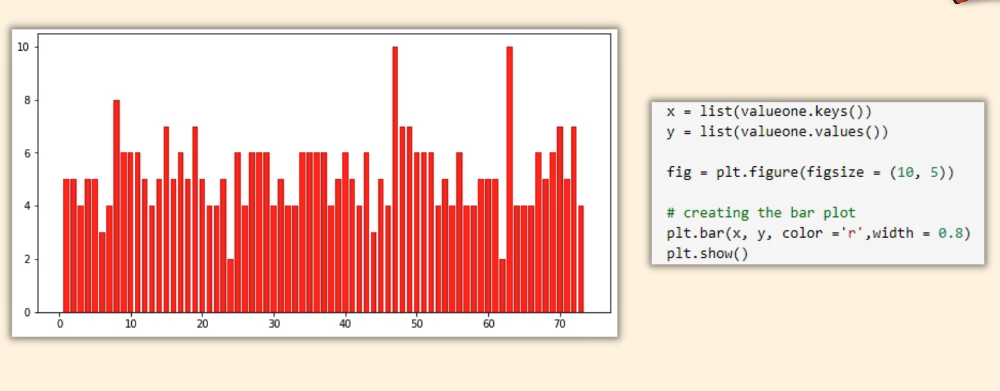
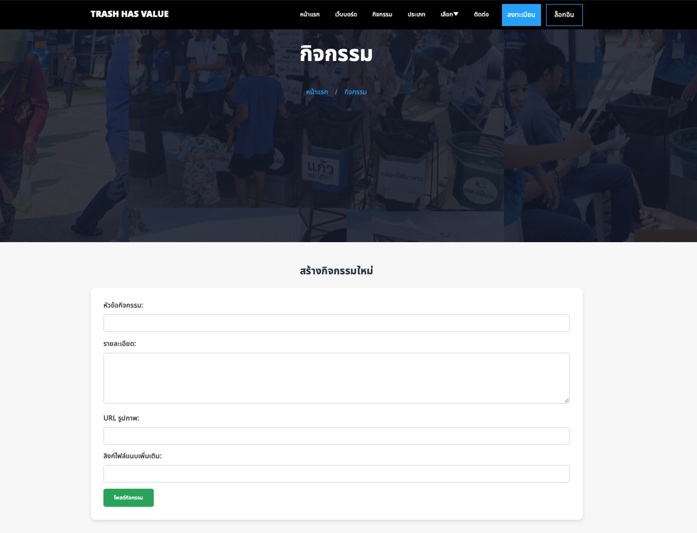

About Me
Peerawit Bootsa
Computer Science Student | Aspiring Developer
A Little About Myself
A Computer Science graduate from Thammasat University with a strong interest in integrating technology, data, and user experience (UX) to solve real-world problems. Throughout my studies, I have developed several projects that reflect my commitment to sustainability, digital innovation, and data-driven solutions.
Personal Information
- Name:Peerawit Bootsa
- Major:Computer Science
- Phone:083 995 6985
- Email:peerawit.boo44@gmail.com
- GitHub:github.com/armpeerwit
- LINE ID:arm22043813
- Address:82/94 Habitia Village, Bang Chan, Khlong Sam Wa, Bangkok 10510
Education
Institution: Thammasat University, Rangsit Campus
Degree: Bachelor of Science in Computer Science
Expected Graduation:2025
Relevant Coursework:
- Data Structures
- Database Systems
- Web Development
- Data Analytics
Skills
Languages & Tools:
- HTML, CSS, JavaScript, Java
Database & Server:
- XAMPP (Apache, MySQL)
Design & Prototyping:
- Adobe XD
Data Visualization:
- Tableau, Power BI
Internship Experience
Intern - Software Developer
Company: PI Securities Public Company Limited (2022)
- Worked in the backend integration team
- Integrated internal financial systems with LINE Official Account
- Utilized APIs for automated communication
- Gained experience with DevOps and live financial systems
Related Links
UX/UI
University Indoor Navigation Assistant
Overview
The CS302-Midterm project proposes a digital solution to help new students navigate the university campus, specifically identifying buildings and classrooms more efficiently. The core idea revolves around replacing or enhancing traditional paper maps with a campus-specific mobile navigation system.
User-Centered Approach
- Target Users: New students at Thammasat University who struggle to locate classrooms.
- Pain Point: Difficulty in finding unfamiliar locations within a large campus using static paper maps.
- Solution: A mobile-based, interactive navigation assistant tailored to the university’s layout.
UX Strategies Applied
- User-Centered Design: Focused on the experience of new students with minimal prior knowledge of campus geography.
- Comparative Platform Design: Considered UX variations between iOS and Android platforms.
- Context-Aware Design: Leveraged the Google Maps API and indoor navigation features to enhance spatial understanding.
UI/Interaction Concepts
- Map interface showing buildings and rooms (SC-2, SC-3, LC-2).
- Simple navigation flows with minimal steps.
- Possibly implemented as a Progressive Web App or native mobile app.
UX Takeaways
- Reduce cognitive load through clear map visuals and orientation.
- Improve efficiency by replacing static maps with real-time digital guidance.
- Design with mobile in mind, as students mainly access tools via smartphones.
COVID-19 Vaccine Booking Application (myVaccine)
Overview
The myVaccine project centers on designing a mobile application that enables the public to register for COVID-19 vaccinations easily, regardless of their technological literacy. The design emphasizes inclusivity, simplicity, and accessibility.
Persona-Driven Design
Three personas were crafted to reflect diverse user needs:
- Bank Employee (tech-savvy) – Needs quick, flexible booking.
- Market Vendor (low-tech) – Needs a simple, guided process.
- Student (tech expert) – Books vaccines for the entire family.
This ensured the app design accommodates a wide range of user experiences.
UX Techniques Applied
- Inclusive Design: Designed interfaces for both digital natives and tech-averse users.
- Progressive Disclosure: Broke tasks into small, manageable steps (e.g., registration → verification → confirmation).
- Visual Guidance: Included video tutorials and tooltips for better onboarding.
- Error Prevention: Used field hints, format validation, and clear instructions.
UI Components & Dialogue Styles
- Form Fill-in: For personal info and OTP verification.
- Menu Selection: Used in initial navigation and final confirmation screens.
- Q&A Elements: Helped users recover or resend OTP codes.
- Video Assistance: Provided for low-tech users to follow instructions visually.
UX Takeaways
- Designing for digital inequality is essential in public health apps.
- Visual education (VDO demos) can significantly improve onboarding success.
- Simplifying interfaces and providing feedback builds user trust and confidence.
Key UX/UI Insights from Both Projects
User-Centered Thinking
Both projects were driven by real-world problems faced by specific users.
Mobile-First Design
UI designs were mobile-oriented for real-life use scenarios.
Inclusive UX
myVaccine demonstrates strong inclusivity across tech literacy levels.
Progressive Flow
Each interface minimized confusion by breaking down tasks clearly.
Applicable Tools
Figma, Adobe XD (for design); React Native, Flutter (for development).
Data Analysis
Project Analysis of Soy Milk Consumer Behavior
Overview
This project is an analysis of survey data aimed at understanding the market and behavior of soy milk consumers, a common case study in market analysis.
Project Objectives
The project has clear goals to answer business questions, including:
- To analyze the soy milk drinking behavior of consumers.
- To study the popularity of soy milk across different age groups.
- To understand the factors influencing purchase decisions.
- To explore the price points that consumers are willing to pay.
Data Analysis Process
Data Collection:
Data was gathered via a questionnaire covering demographics, consumption behavior, preferences, and purchasing factors...
Data Cleansing:
A critical step involving handling missing values and irrelevant data to ensure high quality analysis...
Descriptive Analysis:
Used descriptive statistics to summarize data, identifying target audiences, behaviors, key factors, popular brands, and optimal pricing...
Knowledge and Technology Used
Knowledge:
Market Research, Consumer Behavior Analysis, Descriptive Statistics, Data Visualization principles, and Data Cleaning techniques.
Technology:
Although not explicitly stated, it's likely that tools like Microsoft Excel or Google Sheets were used for creating charts. Alternatively, a statistical program or programming language like Python (with libraries such as Pandas, Matplotlib) or R could have been used.
What Was Learned from This Project?
This project demonstrates how to transform raw data from a survey into actionable insights that are valuable for a business. These insights can inform marketing strategies, such as defining target audiences, developing products that match taste preferences, highlighting health benefits in campaigns, and setting appropriate prices to enhance competitiveness.
Statistical Modeling with Coin Toss Data
Overview
This project is a fundamental exercise in statistics and probability, aiming to show that random phenomena in the real world can be described or "modeled" by theoretical probability distributions.
Project Objectives
- To test and demonstrate that data from a coin-tossing experiment aligns with two specific probability distributions: the Binomial Distribution and the Geometric Distribution.
Analysis and Modeling Process
This project uses two datasets from a coin-tossing experiment to demonstrate alignment with Binomial and Geometric distributions...
Dataset 1 (Binomial Distribution):
Analyzed the number of "heads" from 10 coin tosses, showing a bell-shaped distribution characteristic of the Binomial model...
Dataset 2 (Geometric Distribution):
Examined tosses until the first head, with frequency decreasing as trials increase, typical of the Geometric model...
Knowledge and Technology Used
Knowledge:
Probability Theory, Statistics, Binomial Distribution, Geometric Distribution, Statistical Modeling.
Technology:
The document explicitly shows code snippets like plt.bar(...) and plt.show(), clearly indicating the use of the Python programming language and its visualization library, Matplotlib, for analysis and plotting.
What Was Learned from This Project?
This project teaches one of the most fundamental concepts in Data Science: finding mathematical models to describe data. Understanding the distribution of data is a crucial foundation for more advanced analysis, such as Hypothesis Testing, Prediction, and Simulation. It represents the step from merely "describing" data to "understanding" the process that generates it.
Backend Development
Instagram clone
Overview
This project focuses on the development of an Instagram clone, with a particular emphasis on the backend. The backend development workflow is structured to ensure continuous integration and deployment, encompassing several key stages
Setting up Environment Variables
- Target Users: Before the backend application can function correctly, it requires specific configurations, especially for database connectivity. This step involves securely setting up environment variables within the ./Backend directory. Essential secrets such as ENV_PORT, ENV_DB_USERNAME, ENV_DB_PASSWORD, ENV_DB_NAME, and ENV_TOKEN_KEY are echoed into an .env file. This process ensures that sensitive information is not directly hardcoded into the application and can be managed efficiently, especially in different deployment environments.
Installing Node Modules and Starting the Server (Build & Run)
- User-Centered Design: environment variables are configured, the next crucial step is to prepare the backend application for execution. This involves navigating to the ./Backend directory and installing all the necessary dependencies defined in the project's package.json file by running npm install. After the modules are successfully installed, the server is initiated using the npm start & command. The & symbol ensures that the server runs in the background, allowing subsequent tasks in the CI/CD pipeline to proceed without interruption.
Running Backend Tests (Test)
- A critical phase in backend development is rigorous testing to ensure the application's stability and correctness. This stage involves executing predefined test cases for the backend system. The command npm test is run within the ./Backend directory to initiate these tests. Upon successful completion of all test cases, a notification is automatically sent to the team chat, indicating the success of the backend tests with a message like "(Backend) Test Succeeded!" and providing details such as the event type, repository, branch, workflow, author, committer, and commit URL, along with a timestamp. This automated notification is vital for quick feedback and collaboration among the development team.
Building and Pushing to Docker Hub
- backend tests pass successfully, the application is packaged into a Docker image, which is a lightweight, standalone, and executable package of software that includes everything needed to run it. Using the docker/build-push-action@v2 action, the backend application, located in the ./Backend context, is built and then pushed to Docker Hub. The image is tagged as 11sf/ig_clone_backend:latest, making it readily available for deployment to various environments. This containerization step is essential for ensuring consistency across development, testing, and production environments, and it plays a significant role in enabling continuous deployment.
Graduation Project
TRASH HAS VALUE
This project aims to develop a centralized website for the trading of recyclable materials, supporting sustainable resource management and promoting a circular economy. The website is designed to connect buyers and sellers of recyclables through an easy-to-use system that encourages community participation. Key features include real-time transaction status updates, a point-based reward system to motivate users, and a price comparison tool from multiple sellers to help buyers choose the best deal. Additionally, the platform includes a webboard that serves as a space for exchanging information, knowledge, and experiences related to recycling. This feature helps foster a better understanding of effective waste management. The platform is designed to meet the needs of both buyers and sellers—not only improving the efficiency of recycling transactions but also cultivating a community with strong environmental awareness.
Key Website Features
- Real-time trading status display system
- Points collection system to incentivize recycling
- Seller price comparison system for buyers to choose the best offers
- System for creating groups to collect recyclable materials from multiple users
- Web board for exchanging knowledge and news
- Secure user data management system
Technologies Used
- Frontend: HTML, CSS, JavaScript, jQuery
- Backend: PHP, MySQL
- Web Board System: RESTful API
- Development Plan: Google Maps API, AI for image-based waste type detection
Outcomes and Future Development
- Helps reduce improperly disposed waste
- Increases income opportunities from recyclable waste
- Builds a network among recyclers
- Preparing to develop map systems, AI, notifications, and CSR organization connections
Image Selection Guidelines
(Note: This section provides guidelines for reports/posters, not a direct website feature.)
-
Trading Page For general users, this page allows the creation of collection groups. Users should input a group name and a description of the material to be collected (e.g., plastic or paper), select the material type, and specify the minimum quantity required. The group should also define the collection area and duration, as well as choosing transportation methods and group management options (e.g., limiting members or allowing open participation).
-
Buyer Selection Page Once the selection is confirmed, the system will display the buyer's information, which they have provided. This aims to increase the seller's awareness of waste recycling. Sellers can view buyer activity or subscribe to a buyer's membership before confirming the sale.
-
General User Status Page This page displays accumulated recycling points to incentivize users. It also shows the buyer's status, arrival time, and current status.
-
For Organizations and Waste Management Agencies (Buyers) Buyers can set their desired price per kilogram or minimum purchase quantity. On the right side, information is provided to sellers as an incentive to sell, detailing the potential value of the waste item.
-
Buyer Status Display Page This page shows the seller's status and personal information. Buyers can select their own status to inform the seller.
-
Webboard Page The webboard page allows users to discuss and exchange information about waste management, recycling techniques, and recommendations for reliable sellers or buyers. It also facilitates sharing news and ideas related to community sustainability, helping to build networks among users and promote efficient recycling.
-
Waste Grouping Example Page This page allows users to invite others to create a group. The group will set a target for the desired amount of recyclable waste in kilograms. Users within the group can then continually update their contributions until the specified goal is reached.
-
Activities Page Users can create activities for interested participants to join. Activities can be added through the webboard or the main "All Activities" page.